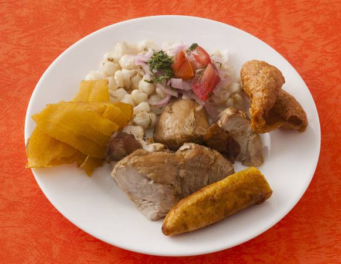

Receta de la fritada criolla
Publicado el 4 septiembre, 2015 por Pilar Ingredientes:
1 kilo de carne de cerdo
1/4 de taza de ajo licuado
1 litro de agua
sal
comino
pimienta negra molida
3 cebollas blancas
Preparación:
Se utiliza carne de nuca y costilla de cerdo. Se trocea.
En una paila de bronce se fríe en poquito aceite la carne de cerdo hasta que vaya sellando por todos lados.
Se agrega el ajo licuado. Cuando va sellando se agrega el comino, la pimienta, la cebolla blanca. Ya estando dorada se agrega un litro de agua por cada kilo de fritada.
Demora mas o menos unos 35 o 40 minutos hasta que el agua se seque y se cocine la carne.
Cuando esté lista se saca la carne y se sella en la propia grasa de cerdo hirviendo para que quede bien doradita.
Roberto Orellana: Saludos. Se puede hacer fritada con la pulpa del cerdo????.
Viviana: Excelente palto! quedo muy bien! Gracias por el post!
Jenniffer: Se ve deliciosa. La voy a poner en práctica.